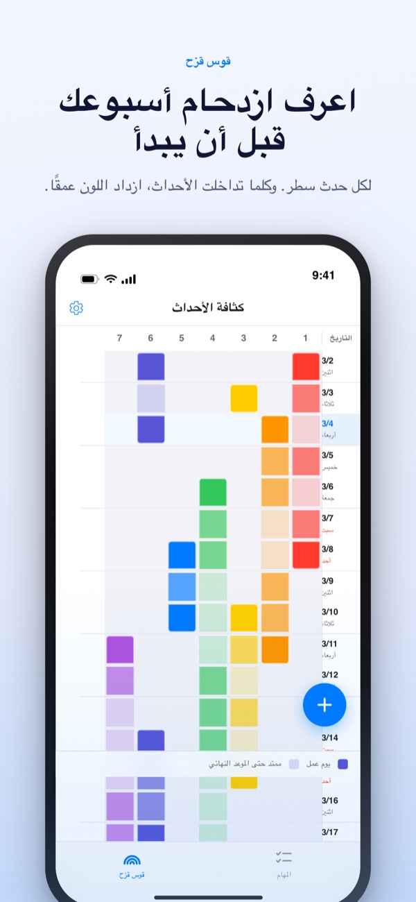
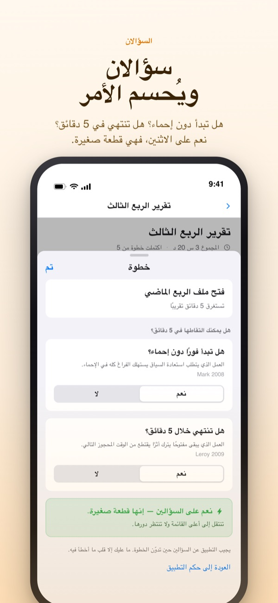
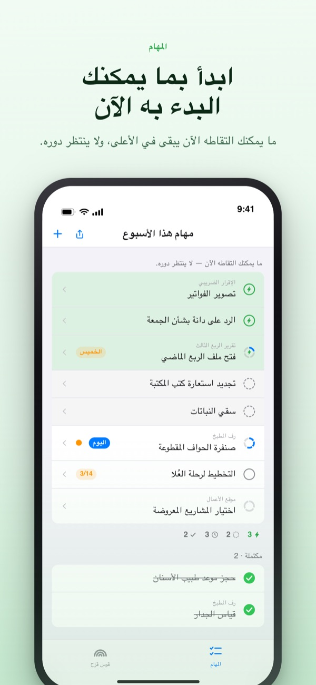
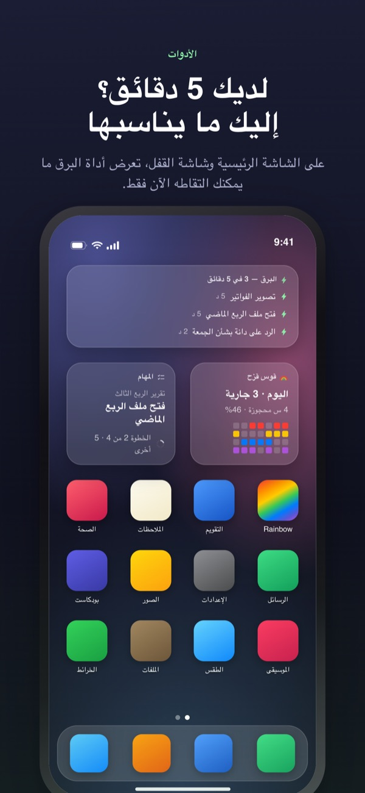

شاهد الأسبوع المزدحم قبل وصوله،
ولا تدع 5 دقائق تضيع منك
كلما تداخلت أعمالك اشتد لون قوس قزح. قسّم المهمة الكبيرة إلى خطوات، وستجد الخطوة التي تنجزها في لحظة فراغ تنتظرك في الأعلى.
قوس قزح، وتقسيم المهام، والمؤقت، والمزامنة مع Mac كلها مجانية.

جرّب الفرز بنفسك
قسّمنا «تقرير الربع الثالث» إلى خمس خطوات. اختر خطوة، ثم غيّر وقتها أو اقلب إجابة أحد السؤالين. الخطوة التي تحصل على «نعم» في السؤالين فقط تصبح قطعة صغيرة تنجزها في 5 دقائق.
ألم يمر بك أسبوع بدا فارغًا في التقويم، ومع ذلك أنهكك؟
يخبرك التقويم فقط إن كان هناك موعد أم لا. لا تكتشف أن ثلاثة مواعيد نهائية تزاحمت في أسبوع واحد إلا بعد أن تدخله، وتضيع الدقائق الخمس التي تتاح لك بينها في تصفح قائمة المهام. يرسم Rainbow of Desire أسبوعك على شكل شبكة، ويزيد اللون عمقًا حيث تتداخل الأعمال، ويختار لك مسبقًا ما تنجزه في لحظات الفراغ.
سؤالان يحسمان الأمر
عندما تقسّم مهمة كبيرة إلى خطوات، يُطرح على كل خطوة سؤالان: هل تبدأ فورًا دون إحماء؟ هل تنتهي كاملة خلال 5 دقائق؟
الخطوة التي تحصل على «نعم» في السؤالين فقط تكون قطعة صغيرة. يجيب التطبيق مسبقًا بناءً على ما كتبته والوقت الذي حددته، ولا تقلب الإجابة إلا إذا كانت خاطئة.

عند لحظة فراغ، انظر إلى الأعلى فقط
اسحب المهمة إلى اليسار لتضيف إليها البرق، فتتخطى الدور وتقف في الأعلى. لا حاجة إلى قراءة القائمة كلها لتعرف ما تنجزه الآن.
حدد مرة واحدة لكل مجموعة إن كانت الخطوات ينتظر بعضها بعضًا. مع «بالترتيب» تتقدم أول خطوة لم تكتمل، ومع «دون ترتيب» تتقدم القطعة الصغيرة التي يمكنك إنجازها الآن.

تراه دون أن تفتح التطبيق
يعدّ المؤقت حتى لحظة انتهاء الحدث، ويظهر الوقت المتبقي في Dynamic Island وعلى شاشة القفل.
تعرض أدوات الشاشة الرئيسية وشاشة القفل المهمة التي تعمل عليها، وما يناسب 5 دقائق، وقوس قزح هذا الأسبوع. (الأدوات ضمن Pro)

ثلاث خطوات لتبدأ
- 1
ارسم حدثًا
اضغط مطولًا على خانة فارغة في يوم البداية، ثم اضغط على يوم النهاية، فيظهر سطر جديد على قوس قزح.
- 2
قسّم المهام الكبيرة
اضغط على المهمة واكتب خطواتها واختر وقت كل خطوة، ويجيب التطبيق عن السؤالين مسبقًا.
- 3
عند لحظة فراغ، انظر إلى الأعلى
تجتمع القطع الصغيرة والمهام التي تحمل البرق في الأعلى دون أن تنتظر دورها.
ما ستراه على الشاشة
- خانة داكنة · خانة فاتحة
- يوم تعمل فيه فعلًا على المهمة، وبقية المدة حتى تنتهي
- سطر ممتلئ بالخانات
- يوم تدير فيه أعمالًا كثيرة في آن واحد، فإن تأخر واحد منها تأخر اليوم كله
- قطعة صغيرة
- «نعم» في السؤالين. خطوة تنجزها متى توفرت لك 5 دقائق
- كتلة قصيرة
- خطوة لا تحتاج إلى إحماء لكنها لا تنتهي في قطعة صغيرة. تجلس لها وتنهيها مرة واحدة
- كتلة
- خطوة تحتاج إلى إحماء أو تتجاوز 45 دقيقة. ضعها في وقت محجوز
- البرق
- علامة «جاهز الآن» تضعها بنفسك. تتخطى الدور وتقف في الأعلى
- بالترتيب · دون ترتيب
- هل تنتظر الخطوات بعضها بعضًا، وتحدده مرة واحدة لكل مجموعة
- سجل الاسترداد
- حصيلة الأسبوع. يسجل ما تبقى من عمل، والوقت الذي استعدته، ووقت الراحة، كلًّا على حدة دون جمعها
يتراكم وقت المهمة من الأسفل إلى الأعلى: وقت المهمة الكبيرة هو مجموع أوقات خطواتها.
ما تحتاجه ليومك مجاني
مجاني
- قوس قزح (شبكة كثافة المواعيد)
- تقسيم المهام إلى خطوات والسؤالان
- البرق، وترتيب الخطوات
- المؤقت (Dynamic Island · شاشة القفل)
- المزامنة مع Rainbow Craft على Mac عبر iCloud
- سجل الاسترداد لآخر أسبوعين
Rainbow Plus · Rainbow Pro
- Plus: إحصاءات الأحداث، وسجل الاسترداد لما قبل أسبوعين
- Pro: كل ما في Plus، مع أدوات الشاشة الرئيسية وشاشة القفل
- Pro: الاستيراد من التقويم وعرض أحداثه
- Pro: مشاركة الأحداث (للقراءة فقط)
- Pro: يفتح Rainbow Craft Pro على Mac أيضًا
كل منهما متاح باشتراك سنوي أو بشراء لمرة واحدة مدى الحياة
لا تدفع إلا مقابل مراجعة الأسابيع الماضية وإخراج بياناتك إلى خارج التطبيق. من اشترى Pro سابقًا ومن لديه اشتراك شهري ما زال يتمتع بـ Pro اليوم.
الأسئلة الشائعة
هل أحتاج إلى حساب أو إلى تسجيل الدخول إلى iCloud؟
لا إن كنت تستخدمه وحدك. لا يوجد تسجيل، وكل شيء يُحفظ على جهازك. لعرض بياناتك على جهاز آخر أو في تطبيق Mac، أو لاستخدام المشاركة، سجّل الدخول إلى iCloud.
أجاب التطبيق عن أحد السؤالين خطأ.
اضغط على الخطوة وبدّل بين «نعم» و«لا». إجابتك تتقدم دائمًا على حكم التطبيق. إن أردت إعادة الأمر إليه، اضغط «العودة إلى حكم التطبيق». الخطوة التي لم تحدد لها وقتًا لا تُحسب قطعة صغيرة، لأن التطبيق لا يعرف إن كانت تنتهي خلال 5 دقائق.
هل يمكنني المشاركة مع شخص آخر؟
يمكنك مشاركة أحداثك للقراءة فقط عبر رابط دعوة (Pro)، ويمكنك أيضًا فتح قائمة مهام واحدة تقرؤها وتكتب فيها مع من تدعوهم. أي شخص يحصل على الرابط يمكنه الانضمام، فأرسله فقط لمن تريد مشاركته. لا علاقة لذلك بخاصية المشاركة العائلية من Apple.
هل تظهر أحداث تطبيق التقويم؟
تظهر أحداث التقاويم التي تختارها على قوس قزح وفي عرض اليوم (Pro). يقرؤها التطبيق فقط ولا يكتب أي شيء في التقويم.
هل يمكنني إنجاز المهام من الأداة؟
الأدوات للعرض فقط. اضغط على الأداة لتنتقل مباشرة إلى شاشة المهام، وأنجزها من التطبيق.
هل عليّ شراء تطبيق Mac بشكل منفصل؟
Rainbow Craft تطبيق macOS مستقل على Mac App Store. مع حساب iCloud نفسه تتزامن المهام والخطط الأسبوعية تلقائيًا، والمزامنة لا تكلف شيئًا.
هل ما زالت مهامي القديمة موجودة؟
نعم. تبقى المهام والخطوات والأوقات التي حددتها كما هي. أما تصنيفات شروط البدء التي اخترتها سابقًا فيعيد التطبيق تقييمها بالسؤالين.
أين تُحفظ بياناتي؟
لا يوجد خادم. تبقى بياناتك على جهازك وفي iCloud الخاص بك فقط، ولا يستطيع المطور رؤيتها. لا يستخدم التطبيق معرّفات الإعلانات ولا الموقع، ويرسل فقط إحصاءات استخدام مجهولة لا تكشف هويتك، ويمكنك إيقافها من الإعدادات.
كيف ألغي الاشتراك؟
من تطبيق الإعدادات > حساب Apple > الاشتراكات. يتجدد الاشتراك تلقائيًا بالسعر نفسه ما لم تلغه قبل 24 ساعة على الأقل من نهاية المدة. أما خيار مدى الحياة فيُدفع مرة واحدة فقط.
إن واجهتك مشكلة أو لاحظت شيئًا غريبًا، راسلنا على leeo@kakao.com. ستجد أيضًا خيار التواصل في إعدادات التطبيق.